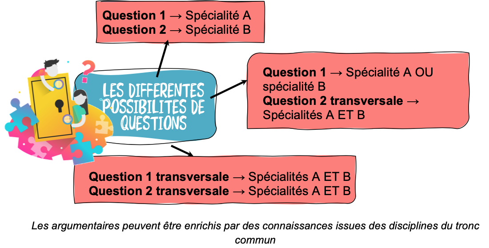
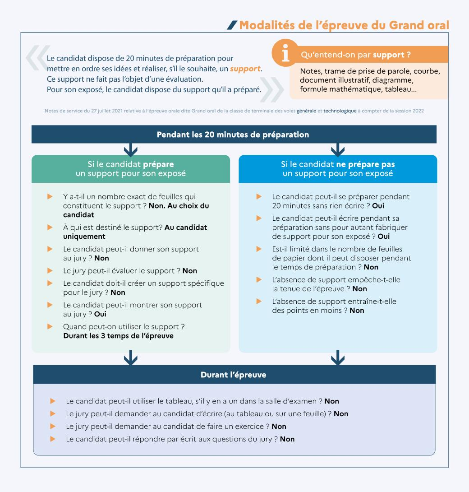
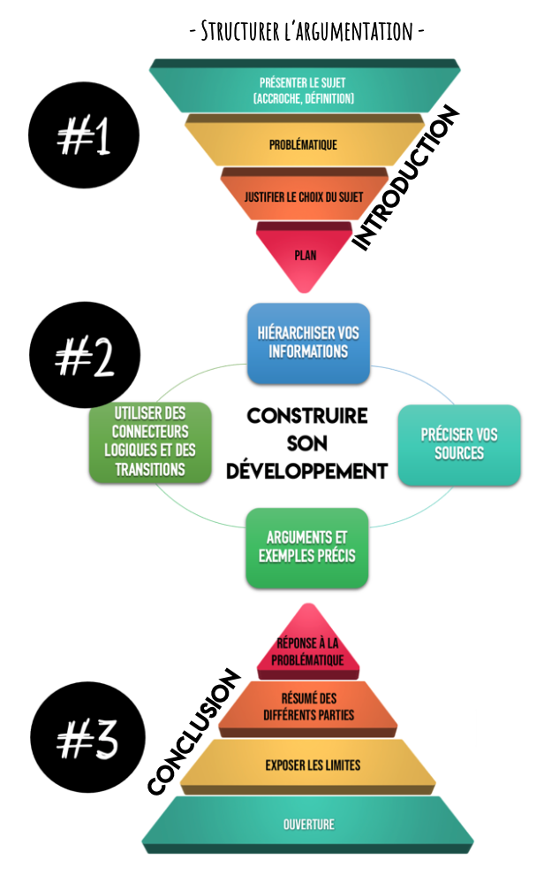
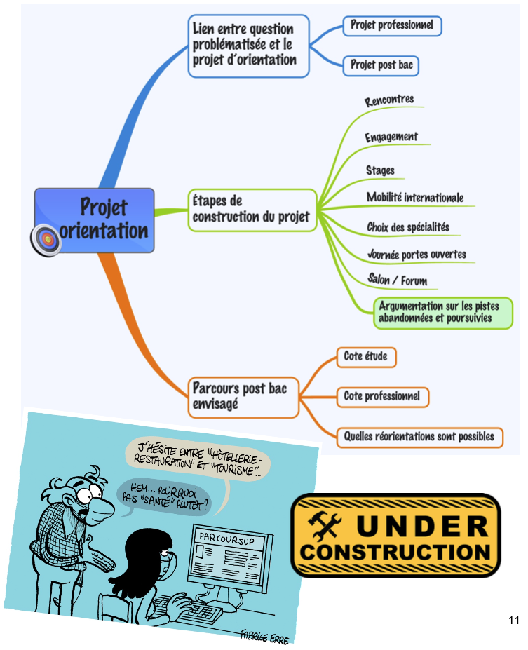

Grand Oral⚓︎
- Vous devez préparer deux sujets, dont au moins un a un rapport avec le programme de NSI.
- Ce sujet peut être croisé avec l'autre spécialité.
- L'oral dure 20 minutes (5 minutes d'exposé et 10 + 5 minutes d'échanges avec le jury) après une préparation de 20 minutes.


- Cette présentation dure ensuite 5 minutes, pendant lesquelles le candidat expose les motivations qui l’ont conduit à choisir cette question, puis présente la réponse qu’il a élaborée.
- À l’issue de ces 5 premières minutes, le candidat et le jury échangent durant 10 minutes. A cette occasion, le jury amène le candidat à préciser et approfondir sa pensée. C’est une opportunité à saisir, pour apporter des compléments à son propos, et montrer sa capacité à écouter, dialoguer, expliciter et argumenter. Enfin, pendant les 5 dernières minutes de l’épreuve, le candidat décrit son projet d’orientation, puis échange avec le jury sur ce projet.
Pendant l’épreuve le candidat dispose du support qu’il a préparé pendant le temps de préparation (20 minutes), s'il a fait le choix d'en réaliser pour accompagner sa prise de parole.
Il s’agit de notes, d’un plan d’exposé, de trame de prise de parole, de mots-clefs ou d’idées directrices. Ces notes peuvent aussi servir de document d’appui à l’argumentation (schéma, courbe, diagramme, tableau, formule mathématique…). Ce support n’a pas vocation à être donné au jury.
Il n’est pas évalué ; il ne sert qu’à appuyer le propos du candidat, si celui-ci le juge nécessaire. Le candidat peut par ailleurs recourir à ce support pour éclairer ses réponses aux questions du jury.
- si la salle d’examen dispose d’un tableau, son utilisation durant ce deuxième temps est interdite

L’analyse du sujet⚓︎
C’est une étape indispensable à la préparation de la recherche documentaire mais aussi pour élaborer votre futur plan de votre oral et votre introduction. Pour cela, vous devez :
- définir les termes et les limites (chrono-spatiales) de votre sujet
- noter les notions en lien avec votre sujet et auxquelles il faudra faire référence au cours de votre oral
- noter les idées-clés, dates essentielles, acteurs, etc.
Les références bibliographiques⚓︎
La recherche bibliographique est indispensable pour trouver les arguments et exemples nécessaires à votre oral. Les outils à disposition :
- La bibliothèque du lycée : livres, périodiques, usuels (encyclopédies, dictionnaires etc)
- Médiathèque ou bibliothèque municipale
- Web : préférez les sites institutionnels aux blogs, les sites de journaux spécialisés.
Conseils⚓︎
- Varier les sources
- Vérifier la fiabilité de vos sources
- Noter vos références afin de retrouver les informations
Introduction⚓︎
Elle doit être soignée car elle donne la 1ère impression sur votre prestation orale. Elle doit comporter les éléments suivants :
- une accroche (ex : un fait d’ actualité en lien avec le sujet etc.)
- définir les enjeux de votre Question et justifier le choix de votre sujet
- La QUESTION
- L’annonce du plan
Conclusion⚓︎
Ne pas la négliger car c’est la dernière impression que vous laissez à votre jury. Elle doit comporter
- la réponse claire à votre QUESTION
- Le bilan de votre argumentation (elle peut comporter une ouverture)
Développement⚓︎
- Il est composé de parties (2 ou 3) qu’il faut rappeler pour que votre jury puisse suivre votre exposé.
- Chaque partie comporte des sous-parties, chacune d’elles présentant un argument et un exemple pour appuyer votre démonstration
Ne pas oublier qu’il s’agit d’un oral. Penser aussi aux éléments suivants (voir grille d’évaluation) :⚓︎
- la voix : être audible avec un débit adapté et fluide
- le regard : dirigé vers le jury (se détacher de ses notes)
- la respiration : faire de courtes pauses
- la posture : debout lors des 5 premières mn (puis vous pouvez vous assoir), droit , souriant
- la gestuelle : éviter les gestes parasites
- le vocabulaire/niveau de langue adapté
- respecter le temps imparti (+/- 30 s)

Le jury mesure la capacité du candidat à conduire et à exprimer une réflexion personnelle témoignant de sa curiosité intellectuelle et de son aptitude à exprimer ses motivations. 

Ne recopie pas mot pour mot les sujets qui suivent : ils sont seulement là pour t’inspirer. Si l’un d’eux t’intéresse, n’hésite pas à creuser pour définir ta propre problématique et adapter le sujet à ton profil et ton projet d’études.
-
Faut-il autoriser les voitures autonomes ? Thème « Interfaces Hommes Machines ».
-
Quels sont les enjeux de l’intelligence artificielle ? Thème « Histoire de l’informatique ».
-
Femmes et numérique : quelle histoire ? quel avenir ? Thème « Algorithmique ».
-
Comment protéger les données numériques sur les réseaux sociaux ? Thème « Algorithmique ».
-
L’informatisation des métros : progrès ou outil de surveillance ? Thème « Données structurées ».
-
Données personnelles : la vie privée en voie d’extinction ? Thème « Base de données ».
-
Cyberguerre : la 3ème guerre mondiale ? Thème « Architecture matérielles ».
-
Les bugs : bête noire des développeurs ? Thème « Langages et Programmation ».
-
Un robot peut-il apprendre comme un être humain ? Thème « Algorithmique ».
-
Le big data est-il le nouveau nerf de la guerre économique ? Thème « Base de données ».
-
Comment l’IA va et révolutionne déjà le monde d’aujourd’hui ? Thème « Algorithmique »
-
La réalité virtuelle : un nouveau monde ? Thème « Interface Hommes-Machines »
-
Les réseaux sociaux sont-ils dangereux ? Thème « Impact sociétal et éthique de l’informatique «
-
Les réseaux sociaux sont-ils compatibles avec le journalisme ? Thème « Impact sociétal et éthique de l’informatique «
-
L’informatisation des métros : progrès ou outil de surveillance ? Thème : « Données structurées et structures de données »
-
La course à l’infiniment petit : jusqu’où ? Thème : « Architectures matérielles, systèmes d’exploitation et réseaux »
-
Ada Lovelace, pionnière du langage informatique. Thème : « L’histoire de l’informatique »
-
Quelle est la différence entre le web 1.0 et le web 2.0 ? Thème : « L’histoire de l’informatique »
-
P = NP, un problème à un million de dollars ? Thème : « Langages et programmation »
-
L’informatique va-t-elle révolutionner l’art ? Thème : « Impact sociétal et éthique de l’informatique »